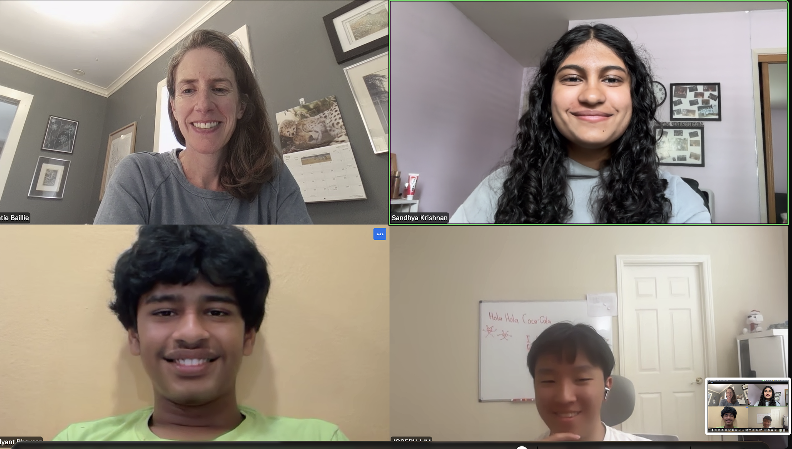

Translating Penn Flood Research for Younger Learners
Penn Climate connected IRISTEM with research examining flooding in Philadelphia after Hurricane Ida.

Beginning with Penn research
Katherine Unger Baillie from Penn Climate recommended research by a University of Pennsylvania team studying flooding in Philadelphia following Hurricane Ida. The Penn researchers examined a real event in a complex city, where rainfall interacts with streets, buildings, drainage, elevation, and the different conditions communities face.
IRISTEM began adapting that work into a student-facing lesson. The goal is not to replace the researchers’ analysis with a simpler story. It is to help younger learners understand the parts of the problem well enough to ask how researchers represent flooding, compare modeled results with observed patterns, and decide where a model may need improvement.
Building a flood model students can test
The developing activity introduces rainfall, land surfaces, flood risk, and community vulnerability through a sequence students can manipulate. Learners map land, add water to their model, and compare what happens in different locations. They can ask why water collects in one area, moves through another, or creates different consequences depending on the people and infrastructure exposed.
Students then check whether their model represents real flood patterns. That step is central to IRISTEM’s translation: a model is not only something to build, but a claim to test. Comparing outcomes gives students a reason to revisit their assumptions about surfaces, water movement, and which local details matter.
Keeping the research connection visible
IRISTEM’s contribution is the educational adaptation—selecting concepts from the research, planning the mapping and water-modeling steps, and writing prompts that move students from observation to evaluation. The University of Pennsylvania research team remains the source of the Philadelphia flood study and its scientific approach.
Penn Climate’s recommendation created a pathway from university research to a younger audience, but it does not mean Penn formally approved every final educational interpretation. Review and careful source credit remain important as the lesson develops. By keeping those limits visible, IRISTEM can make flood science approachable while showing students how knowledge is tested: construct a model, observe the result, compare it with evidence, and improve the explanation.